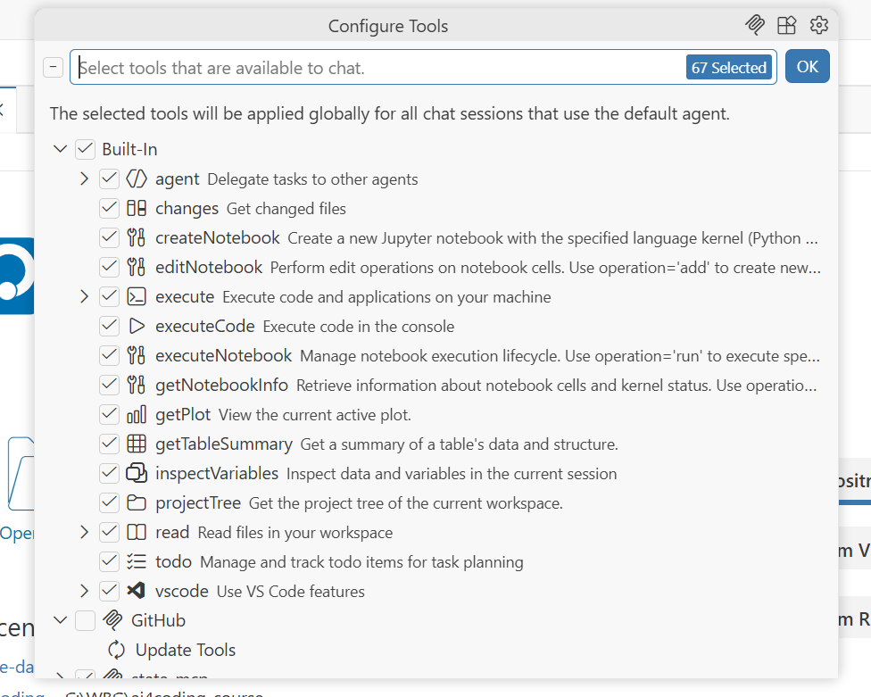
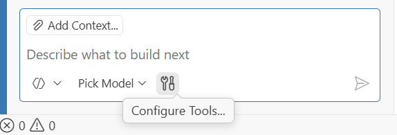
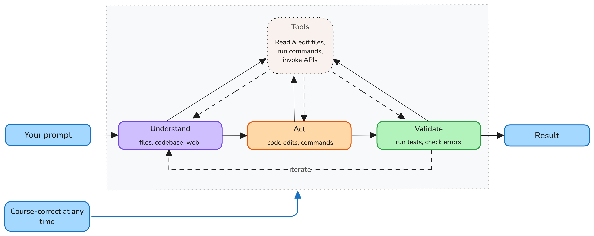
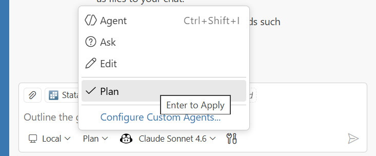

AI 4 Coding
Day 2. Advanced features: #tools, MCP, instructions, /prompts, @agents, and more…
Distributional Impact of Policies. Fiscal Policy and Growth Department
2026-04-23
Introduction
Motivation
In Day 1, we covered basics and concluded that using AI comes with the practical limitations such as:
- Context window size — the amount of information you can provide to the AI at once is limited.
Requests — the number of interactions you can have with the AI in a are costly and we need to minimize them by optimizing the context and prompting.
Hallucinations — the AI may generate plausible-sounding but incorrect or irrelevant information, which can lead to errors if not carefully managed.
Agenda for today
Today we will:
- Address questions from Day 1 and exercise agentic workflow on Self-study Example 3.
- Explore context engineering with
#tools,MCP,instructions,/prompts,agents, andskills. - Use Planning mode.
- Integrate customization into Positron’s assistant.
- Write instruction and prompt files.
- Know where to read more.
Scaffolding on Self-study Example 3
- Reproduce the analysis by running the code and understanding the data transformation.
- Analyze if and how it aligns with the DIME’s coding standards.
- Revise the code to align it with the standards and check the output is the same.
Prompts examples
- Understand
Explain to me what this analysis does. Summarise inputs and outputs, where
they come from and where they are saved. Critically reflect on strengths and
weaknesses of this code.- Adjust and reproduce
Change the location of output to the current working directory and
run/debug code execution iteratively.- Analyze coding standards
Analyse this code for alignment with the DIME coding standards. Identify areas of
misalignment and suggest specific revisions to improve compliance with the standards.
The standards are here:
https://raw.githubusercontent.com/worldbank/ai4coding/refs/heads/main/methods/dime-handbook-appendix.qmd- Revise - Do at home.
Tools and MCP
Tools vs MCP
Tools — IDE functions an agent calls during chat (search code, run commands, fetch web, invoke APIs).
MCP — open standard connecting AI apps to external systems via separate servers exposing tools, resources, and prompts.
Tools in Positron
Tools extend agents with specialized functionality: searching code, running commands, fetching web content, or invoking APIs.
Three types of tools:
- Built-in tools —
#codebase,#problems,#web,#search,#edit - MCP tools — from installed MCP servers
- Extension tools — contributed by VS Code / Positron extensions
Toggle tools per-request via the Configure Tools button in the chat input.


Using Tools in Chat
Reference tools explicitly in prompts with # followed by the tool name:
"#executeCode in the file `analysis.do`."
"Research the #codebase to find how the variable `gdp_per_capita` is calculated."
"#read the file `methods.md` and summarize the methodology."
"#inspectVariable `population` to understand its distribution and missingness."
"#search for recent papers on poverty reduction in Sub-Saharan Africa using #web."Permission levels control agent autonomy:
| Level | Behaviour |
|---|---|
| Default Approvals | Confirmation dialog before tool runs |
| Bypass Approvals | Auto-approves all tool calls |
| Autopilot (preview) | Auto-approves + auto-responds; works until done |
Demo: Tools in action
Continue with the same Self-study: Example 3.
Open a new chat and ask it to inspect the
#codebaseor run code using#runInTerminalinstead of#executeCode.
Run the code using `#runInTerminal` tool. If it fails, identify the error and
fix it iteratively until it runs successfully. Then, produce the output.- Observe the tool being called and the response generated.
What is MCP?
Model Context Protocol (MCP) is an open standard for connecting AI applications to external systems: a USB-C port for AI.

MCP servers expose specialized Tools (executable functions), Resources (contextual data), and Prompts (reusable templates) to the AI agent.
MCP @ WB (caveats)
MCP are still in early stages of adoption and tooling ecosystem is evolving rapidly.
MCP is not allowed in VS Code from the WB Software Center.
Thus, to use MCP servers, you need to have some coding skills to set them up.
MCP examples
Stata for Positron uses stata-mcp server on the back end which could be configured to connect.
Data360 MCP — connects to World Bank Data360 platform.
Online citation tools, code linters, and more are being developed by the community.
MCP Servers in Positron
- Only by configuring
.vscode/mcp.jsonthrough Command Palette —MCP: Add Server. - WB Disables: Extensions view — search
@mcpand install from the MCP server gallery
MCP vs Tools
| MCP | Tools | |
|---|---|---|
| What | Open protocol / standard | IDE-level concept |
| Scope | Server exposes tools + resources + prompts | Individual callable function |
| Runs as | Separate process (local or remote) | Within the agent loop |
| Portable | Works across any MCP-compatible host | Specific to VS Code / Positron |
| Config | mcp.json or extensions gallery |
Built-in, extension, or MCP-sourced |
| Selection | Server is enabled/disabled as a whole | Toggled individually per request |
MCP is how you connect external capabilities. Tools are what the agent uses during a chat session. MCP servers provide tools (and more).
Demo: Stata MCP
No need to install any additional software, only Stata for Positron
ntluong95/positron-statathat we installed on Day 1.Configure MCP server connection as described in the previous slide.
Start MCP server locally by pressing
StartUse
#stata_run_fileor#stata_run_selectionin the chat as a new tool.Observe the difference in executing code via the MCP tool.
Demo: MCP in action
Use the same Self-study: Example 3.
Open a new chat and instruct it to introduce errors in the current code:
Introduce errors in the code to make it fail. I need it for experimental and
teaching purpose to teach students how to debug it. introduce 3-5 errors of
different types that will make code fail. Make sure to not break the overall
structure of the code.- Open a new chat and ask it to fix the code using the MCP tool:
- Now reject the changes and ask it to fix the code using the MCP tool:
- Observe the difference in the process.
Ctrl+Shift+P→MCP: List Servers->stata-mcp->Show outputto see the interaction with the MCP server.
Agents
What is an Agent?
An agent is an AI system that autonomously plans and executes coding tasks. You give it a high-level goal — it breaks it into steps, executes them with tools, and self-corrects when it hits errors.
Default agents in Positron:
| Agent | Purpose |
|---|---|
| Ask | Answers & code suggestions — no execution |
| Edit | Suggests code changes for you to apply |
| Agent | Autonomously runs code, edits files, calls tools |
| Plan | Creates a detailed plan before execution |
What makes agents powerful:
- 🔁 Iterative — loop until the task is done
- 🔧 Tool-using — read files, run commands, call APIs
- 🧠 Self-correcting — diagnose errors and retry
- 🎛️ Customizable — create custom
.agent.mdfiles with specific tools & instructions
The Agent Loop
Every agent follows the same iterative cycle — Understand → Act → Validate — until the task is done.

You stay in control by:
- Redirecting requests, adding context, or stopping at any time.
- Accepting or rejecting tool calls, and providing feedback.
Three stages:
- Understand — reads files, searches the codebase, looks up docs
- Act — edits code, runs commands, calls tools / MCP servers
- Validate — runs tests, checks errors, self-corrects
At each step the model picks the next action. Tool outputs feed the next iteration.
Agent Types
Agents run in different environments depending on when you need results and how much oversight you want.

| Type | Where | Interaction |
|---|---|---|
| Local | Your machine | Interactive in IDE |
| Background | Your machine | Autonomous, async |
| Cloud | GitHub infra | Autonomous, remote |
Choosing the right type:
- Quick fix / refactor → Local agent
- Long build / migration → Background agent
- CI/CD, issue triage → Cloud agent (GitHub Copilot coding agent)
Subagents
For complex tasks, the main agent can delegate subtasks to subagents — independent AI agents that work in their own context window and report back.
Why subagents?
- Context isolation — each subagent gets a fresh context window, preventing the main conversation from overflowing with intermediate results
- Parallel execution — multiple subagents can run simultaneously (e.g., analyze security, performance, and accessibility at once)
Focused results — only the summary comes back to the main agent, reducing token usage
Example: Plan agent
Subagent burn premium requests.
Agent Memory (new in VS Code / not available in Positron yet)
Agents use memory to retain context across conversations — no more repeating yourself.
Agents read and write memory files automatically as they learn your patterns.
Note: this is an emerging feature. It is not yet supported by Positron.
Three memory scopes:
| Scope | Persists |
|---|---|
User (/memories/) |
Across workspaces |
Repository (/memories/repo/) |
Across conversations |
Session (/memories/session/) |
Current conversation |
What memory captures:
- 🎯 Your coding conventions and preferences
- 📁 Project structure and key files
- 🐛 Lessons from past debugging sessions
- 📐 Architectural decisions
View memory: Chat: Show Memory Files in Command Palette. The Plan agent stores its plans at /memories/session/plan.md.
Customising Agents (overview)
| Mechanism | What it is | When it fires | Scope |
|---|---|---|---|
Instructions (.github/copilot-instructions.md) |
Global rules | Always on | Workspace |
Prompt files (.github/prompts/*.prompt.md) |
Reusable task or templates / |
On demand (/myPrompt) |
Per-task |
Custom agents (.github/agents/*.agent.md) |
Persona + curated tool set | User @mentions the agent |
Per-conversation |
Skills (.github/skills/*/SKILL.md) |
Scoped expertise package loaded by description match | Auto-matched depending on the prompt and skill description | Per-request |
Hooks (.vscode/hooks/*.md) |
Pre/post actions on agent events (save, create, command) | Automatically on event | Per-event |
| Plugins | Prepackaged bundles of chat customizations | Many options | Project/user |
Instructions, Prompts, Agents & Skills
| Instructions | Prompt files | Custom agents | Skills | |
|---|---|---|---|---|
| File | .github/copilot-instructions.md |
.github/prompts/*.prompt.md |
.github/agents/*.agent.md |
.github/skills/*/SKILL.md |
| Activation | Always on | On demand — /promptName |
Explicit @mention |
Auto-matched by description |
| Purpose | Global rules & guardrails | Reusable task templates | Persona + curated tool set | Scoped expertise package |
| Variables | No | Yes — ${file}, ${input:name} |
No | No |
| Tools | No | No | Declares allowed tools | No |
| Scope | Entire workspace | Single task | Entire conversation | Single request |
| Stacking | One file | Multiple prompts | One agent at a time | Multiple skills can fire together |
| Typical use | “Always use tidyverse” |
/clean-survey |
@stata-analyst |
Style guide, linting |
.instructions.md
Instructions are global rules injected into every agent request — no activation needed.
Copilot uses all typical instruction files, also specific to Claude Code and other IDEs.
├── .github/
│ ├── instructions/
│ │ ├── stata.instructions.md
│ │ ├── <instruction-name>.instructions.md
│ │ └── data/
│ │ └── <instruction-name>.instructions.md
│ └── copilot-instructions.md
├── AGENTS.md (for Other IDEs)
├── CLAUDE.md (for Claude Code)
└── .claude/rules/<rule-name>.md`(for Claude Code)Coding style & language preferences
Project structure conventions
Team guardrails (“never use absolute paths”)
.github/instructions/stata.instructions.md
---
name: 'Stata Standards'
description: 'Coding conventions for Stata files'
applyTo: '**/*.do'
---
# Stata coding standards
- Follow the DIME coding conventions (see examples below).
- Use consistent indentation.
- Comment your code why, not what.
- Avoid hardcoding paths.
- ...Use AI to create, or Ctrl+Shift+P → Chat: Configure Instructions
See: Positron / VS Code instructions file format, Claude rules, Repository of instructions.
Demo: Instructions in action (1)
Open existing Self-study: Example 3 from the tools exercise and open chat, where we asked if the analysis aligns with the DIME coding standards.
Start iterating with it asking to rewrite the code according to the DIME coding standards.
Then Ask AI to summarize the coding standards it applied and create an instruction file for it.
Open a new agent, provide it with the link to VS Code instructions documentation and Positron instructions documentation and ask it to revise the instruction file.
Provide link to the Dime Coding Standards and ask it to align the instruction file with the standard.
Ask to revise the code.
Demo: Instructions in action (2)
- First agent
Create an instruction file that will enforce the coding standards discussed
in the chat before. Use the DIME coding standards as a reference:
https://raw.githubusercontent.com/worldbank/ai4coding/refs/heads/main/methods/dime-handbook-appendix.qmd- Second agent
Check if .github/instructions/stata.instructions.md file adheres to the DIME
coding standards. Report any gaps and misalignments and suggest improvements.- Refactoring code
/prompt-file
Prompt files are reusable task templates invoked on demand with /my-prompt
├── .github/
│ └── prompts/
│ ├── clean-survey.prompt.md
│ └── <prompt-name>.prompt.md
├── .claude/commands/<command-name>.mdRepetitive multi-step tasks, e.g., onboarding templates
Invoke with /clean-survey in the chat panel.
Inject dynamic context: ${file}, ${selection}, ${input:name} .
Reference tools #tool:<tool-name>
Use AI to create, or Ctrl+Shift+P → Chat: New Prompt File…
More: Positron/VS Code/Copilot.
---
name: clean-survey
description: 'Clean and label dataset'
agent: 'agent' # or 'ask' 'plan'
model: Claude Sonnet 4.6 # optional
tools:
- executeCode
- read
---
# Clean survey data
1. #read ${input:filepath}.
2. Drop observations where `consent != 1`.
3. Label all variables using codebook.md
4. Save cleaned data to `data/clean/`.Demo: Prompt files in action
After the process of the code refactoring above, ask AI to create a prompt for code upgrade to the DIME’s standard.
Open chat, where you asked the code to first understand and reproduce the code, and ask this chat to create a prompt file
reproduce-stata.Open new project with Self-study: Example 3 and place there
.github/prompts/and.github/instructions/folders with the files created in the previous demo.Open a new chat and invoke the prompt file with
/refactor-codeor/reproduce-stataand provide the filepath to the raw survey data as input.
@agents
Custom agents are personas with specific tool access to handle specialized tasks.
├── .github/
│ └── agents/
│ ├── stata-analyst.agent.md
│ └── <agent-name>.agent.md
├── .claude/agents/<agent-name>.md (Claude Code only)feature-builder.agent.md
---
name: Feature Builder
description: Build features by researching first, then implementing
tools: ['agent']
agents: ['Researcher', 'Implementer']
---
You are a feature builder. For each task:
1. Use the Researcher agent to gather context and find relevant patterns in the codebase
2. Use the Implementer agent to make the actual code changes based on research findingsUse AI to create, or Chat: New Custom Agent… (Ctrl+Shift+P).
researcher.agent.md
---
name: Researcher
description: Research codebase patterns and gather context
tools: ['search/codebase', 'web/fetch', 'search/usages']
---
Research thoroughly using read-only tools. Return a summary of findings.implementer.agent.md
Skills
A Skill is a scoped package of expertise — a SKILL.md file that the agent loads only when the request matches its description.
Project-level skills:
User-level skills:
~/.copilot/skills/*/SKILL.md
~/.claude/skills/*/SKILL.mdCtrl+Shift+P→Preferences: Open User Settings (UI)→ search forchat.agentSkillsLocationsto see the path.
Loaded on match, Composable:, Portable:.
More: VS Code Skills · Anthropic Skills · Repository of skills
Demo: Skills out of the box
Stata skills are very important for AI as it had a very limited stata training base. Dylan T. Moore developed the Stata Skill: a comprehensive Stata coding style and best practices skill.
Let us import it into the project and see how it works in action, when we ask the agent to refactor the code to align with the DIME coding standards using the prompt file or in the chat.
To import the skill:
Download skill files from Stata Skill GitHub.
Find the skill folder for
stata, which is inplugins/stata/skills/stataCopy the last
statafolder into.github/skills/in your project.Invoke a prompt to reproduce the analysis and observe if the skill is automatically loaded and applied to the request.
Ask in chat:
What skills are available for you?to see the list of possible skills.
Useful platforms with skills
- Dylan T. Moore’s Stata Skill
- a comprehensive Stata coding style and best practices skill.
- Scott Cunningham mixtape
- a collection of skills for empirical researchers and writing.
- k-dense.ai’s Scientific skills
- Community-contributed skills.
- Awesome Github Copilot Skills
- A community-curated list of skills for GitHub Copilot.
- Awesome Claude Skills
- Community-curated list of skills for Anthropic’s Claude.
- Awesome Claude Skills (alternative)
- A general directory of skills across platforms.
Planning Mode: an agent
Creates a step-by-step plan to accomplish your request.
Retrieves relevant context and develops a detailed plan, which it presents for your review before proceeding with execution.
see: Positron Chat Agents or VSCode planning
Planning Mode
For complex tasks, jumping straight into code generation leads to wrong architectural decisions. Plan mode researches and designs before writing a single line of code.
4-phase workflow:
- Discovery — read-only research using codebase analysis & tools
- Alignment — clarifying questions to resolve ambiguities
- Design — structured implementation plan drafted
- Refinement — iterate on the plan with your feedback

In VS Code (not yet in Positron)
The plan is saved to /memories/session/plan.md — view it with Chat: Show Memory Files.
See: 📖 VS Code / agents/planning
Planning mode in action (1)
Open a fresh copy of Self-study: Example 3 on your local machine.
Copy into it
.github/instructions/folder.github/prompts/folder.github/skills/folder
Plan the revision of
analysis
/plan revising `analysis_xxx.do` to 1-Reproduce it, 2-Refactor it
so that it aligns with the DIME coding standards specified in
instruction file and 3-Upgrade the analysis to incorporate new wave of the
survey data for 2024. Ask any clarifying questions you have before drafting
the plan. Then, produce a step-by-step plan for my review. If you
need to use any tools, explain why they are needed and how they are needed
and how they will work before requesting my approval.Planning mode in action (2)
Iterate to refine the plan until it looks good to you.
Ask to write the plan into a prompt file.
Curate the tools used by the plan.
Execute the plan using the prompt file and observe the process.
Use a powerful reasoning model (e.g., claude-4.6-sonnet, claude-4.6-opus) for planning and a faster model for implementation.
Other examples
Planning and execution new analysis.
Plan and execute Example 1 (1)
Step 1. Open a copy of Self-study: Example 1 on your local machine. Step 2. Remove old code (if there is any) and leave only data in. Step 3. Connect Stata MCP server. Step 4. Load DIME Stata Style Guide as a user-wide skill. Step 5. Open chat and write a prompt:
Plan and execute Example 1 (2)
Goal: To learn how to use Positron AI assistance to write Stata code and
execute it. This code should include: data loading, descriptive statistics,
regression analysis, and visualization.
In details, these steps are:
1. Load exemplary data from data/raw/
2. Summarize descriptive statistics of all variables
3. Run a regression of income on individual characteristics
4. Create a scatter plot of income vs age
5. Create a box plot of income vs education levels
6. Save regression results and figures in an Excel filePlan and execute Example 1 (3)
Use /plan to create a step-by-step plan for this task. Then, execute the plan
iteratively to achieve the goal. Use #stata-mcp to execute code and iterate
untill everything runs successfully. If you need to use any other tools,
explain why they are needed and how they will work before requesting my approval.
Redulsting stata do file should be named `example2-planned.do` and saved in
the root of the project.
worldbank.github.io/ai4coding by Eduard Bukin © 2026 World Bank.